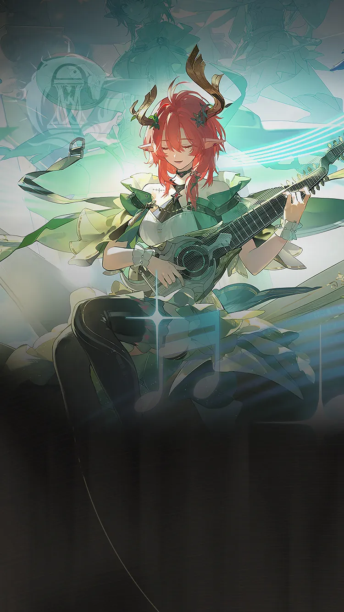

Wuthering Waves Resonator guide
Ciaccona build, teams, weapons, and Echoes
Premium Aero Erosion sub-DPS.
Personal notes
Optional profile-aware info that keeps the main guide unchanged.
No profile connected on this browser yet.
Log in above to load an existing WaveKit profile, or use the team helper to mark your Resonators and weapons for Ciaccona.
Skill priority
Team compositions
 Main DPSCartethyiaOpen guide for details
Main DPSCartethyiaOpen guide for details Sub DPSCiacconaOpen guide for details
Sub DPSCiacconaOpen guide for details SupportChisaOpen guide for details
SupportChisaOpen guide for detailsCiaccona is Cartethyia's core Erosion partner, while Chisa is the best specialist third slot for the highest-output version of the team.
Main DPSCartethyiaOpen guide for detailsSub DPSCiacconaOpen guide for details SupportAero RoverOpen guide for details
SupportAero RoverOpen guide for detailsAero Rover fills the same stack-support job with reliable healing and a free dedicated weapon, making this the most accessible alternative to Chisa.
Main DPSCartethyiaOpen guide for detailsSub DPSCiacconaOpen guide for details SupportShorekeeperOpen guide for details
SupportShorekeeperOpen guide for detailsUse Shorekeeper when healing, Crit support, and a calmer multi-wave rotation matter more than specialist output.
New player reading guide
If you are only checking Ciaccona before building a profile, start by confirming their role, weapon type, Sonata, and whether they need a real healer or a specific helper.
Ciaccona guide overview
Ciaccona is an Aero Sub DPS in Wuthering Waves. Its recommended build starts with Woodland Aria, while its Echo plan uses Gusts of Welkin. The guide also covers stat priorities, compatible teammates, and a practical rotation.
Quick build
- Role
- Sub DPS
- Team type
- Erosion, Negative
- Best weapon
- Woodland Aria
- Alternate weapons
- Phasic Homogenizer / Lux & Umbra / Romance in Farewell
- Sonata
- Gusts of Welkin
- Echo cost
- 4-3-3-1-1
- Main Echo
- Reminiscence: Fleurdelys
- Main stats
- CRIT Rate or CRIT DMG / Aero DMG / ATK%
Stat priority
- Priority 1: Energy Regen until satisfied, for consistent Erosion setup
- Priority 2: CRIT Rate and CRIT DMG
- Priority 3: ATK%
- Priority 4: Flat ATK
Resonance Chain overview
Each Resonance Chain level comes from duplicate copies of this Resonator. Expand a level for the exact in-game effect and use the short line for a quick read.
Chain effects
R1Where Wind SingsCasting Resonance Skill Harmonic Allegro grants Ciaccona immunity to interruption for 3s.…+
Casting Resonance Skill Harmonic Allegro grants Ciaccona immunity to interruption for 3s. Casting Basic Attack increases Ciaccona's ATK by 35% for 10s.
R2Song of the Four SeasonsDuring Resonance Liberation Singer's Triple Cadenza, Resonators in the team gain 40% Aero DMG Bonus.+
During Resonance Liberation Singer's Triple Cadenza, Resonators in the team gain 40% Aero DMG Bonus.
R3Starlit ImprovCasting Basic Attack Stage 4 additionally grants 1 segments of Musical Essence.…+
Casting Basic Attack Stage 4 additionally grants 1 segments of Musical Essence. Resonance Skill Harmonic Allegro gains 1 more charge.
R4Toccata and FugueCiaccona ignores 45% of the targets' DEF when dealing damage with Heavy Attack Quadruple Downbeat; Ciaccona ignores 45% of the targets' DEF when dealing Resonance Liberation DMG.+
Ciaccona ignores 45% of the targets' DEF when dealing damage with Heavy Attack Quadruple Downbeat;
Ciaccona ignores 45% of the targets' DEF when dealing Resonance Liberation DMG.
R5Eternal Idyll to Lasting SummerGain 40% Resonance Liberation DMG Bonus; DMG taken by Resonators within and around the range of Resonance Liberation Singer's Triple Cadenza is reduced by 30%.+
Gain 40% Resonance Liberation DMG Bonus;
DMG taken by Resonators within and around the range of Resonance Liberation Singer's Triple Cadenza is reduced by 30%.
R6Unending CadenceWhen in Solo Concert, Ciaccona or Ensemble Sylph deals Aero DMG equal to 220% of Ciaccona's ATK to nearby targets, considered Resonance Liberation DMG.+
When in Solo Concert, Ciaccona or Ensemble Sylph deals Aero DMG equal to 220% of Ciaccona's ATK to nearby targets, considered Resonance Liberation DMG.
Effect names, numbers, and conditions follow current public game-data records. WaveKit keeps the full wording available so important conditions are not lost in a tier label.
Simple play pattern
- Use Ciaccona as a setup piece: apply their buff, effect, or off-field pressure first.
- Swap back to the carry once their useful window is active.
- If their setup feels late, add Energy Regen before chasing more damage.
Build priority
- Difficulty
- Flexible
- Safety
- Bring a healer if learning
- Data note
- Guide checked
Ciaccona is most valuable when their buff, element, or mechanic matches the carry you want to build.
Ciaccona FAQ
What is the best Ciaccona build in Wuthering Waves?
Ciaccona's recommended WaveKit setup is Aero Erosion Sub-DPS Build, using Woodland Aria, Gusts of Welkin, and Reminiscence: Fleurdelys as the main Echo target.
What stats should Ciaccona use?
Start with CRIT Rate or CRIT DMG / Aero DMG / ATK%. If the rotation feels uncomfortable, improve Energy Regen or defensive comfort before chasing perfect substats.
What teams work with Ciaccona?
Ciaccona's best specialist team is Cartethyia / Ciaccona / Chisa. Aero Rover can replace Chisa for free healing and comfort, while Shorekeeper is a safer multi-wave alternative.
Is Ciaccona beginner friendly?
Ciaccona's current difficulty is listed as Flexible. If you are learning, pair them with safer sustain or defensive support.